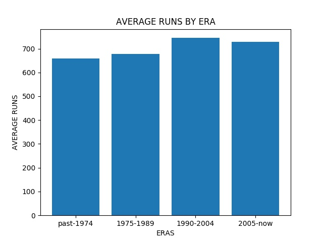
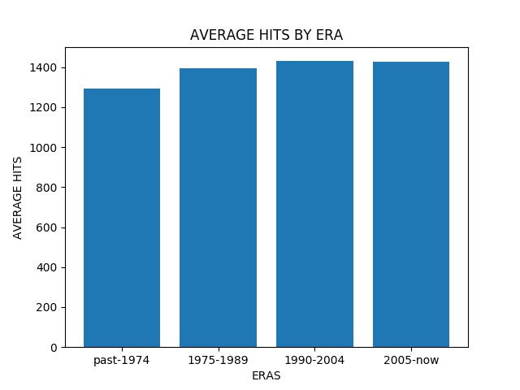
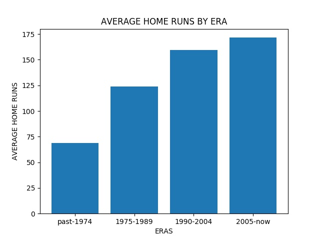

Professional sports and as a matter of fact, any competitive pasttime, lend themselves to the pursuit of greater and greater heights. Along the way, athletes of every level would undoubtedly search for any and every way to progress as they reach their natural limits. Personal Enhancement Drugs, or PEDs, have been around ever since this pursuit existed, however, their efficacy varied widely until the more recent advances in medicine and pharmacology. These charts will explore the correlation between different time periods of notable PEDs activity and the relative performance of athletes in Major League baseball.
 Throughout the years the number of runs and hits have gone up modestly. This could easily be attributed to factors other than PEDs such as improved training regiments, better sportswear and technology, and better baseball knowledge in general. This amount of improvement is to be expected as the years go on and athletes continue to improve.

The doubles graph sees more dramatic jumps in between the time periods. Most notably, the sharpest increase can be seen in the 1990-2004 period. This period of time has been dubbed by many as the "steroid era" of MLB and we can see some of its effects here.

Curiously, the triples graph exhibits a downwards curve as the years went on, even as steroids were supposedly rampant in the league.
We again see the sharp upward trend associated with the advent of heavy steroid use in the late 90s and early 2000s. In the later part of the 2000s, policies and heavier regulations of PEDs led to a deceleration in improvement as seen in this and the doubles graph.
{% endblock %}